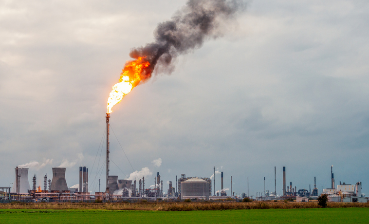

La Importancia de Conocer los Hotspots Permanentes en Teledetección de Incendios Forestales
La teledetección satelital es la herramienta más eficaz para el monitoreo global de incendios forestales en tiempo casi real. Sensores térmicos como MODIS y VIIRS de la NASA detectan anomalías de temperatura en la superficie terrestre, conocidas como “hotspots” o puntos de calor.
Sin embargo, el monitoreo del fuego activo presenta un desafío clave:
“No todos los incendios son detectables, ni todo lo detectado son incendios.”
Esta afirmación resume uno de los mayores retos en la teledetección del fuego activo, y subraya la necesidad de identificar y eliminar los hotspots permanentes para evitar interpretaciones erróneas en los sistemas de monitoreo satelital.
¿Qué son y por qué filtrarlos?
Un hotspot permanente es una fuente de calor recurrente o constante, generada por actividades humanas no relacionadas con la vegetación, como plantas de cemento, fundiciones, quemas de gas en antorcha o procesos geotérmicos. Si no se identifican y filtran estos puntos fijos del conjunto de datos, se producirán falsas alarmas que pueden saturar los sistemas de alerta temprana y desviar recursos valiosos.
La exclusión de estos puntos es un paso mandatorio en la fase de preprocesamiento de los datos de detección de fuego activo. De lo contrario, cada paso del satélite sobre estas fuentes térmicas podría interpretarse erróneamente como un nuevo incendio.
Impacto en la Precisión y la Investigación
Filtrar rigurosamente los falsos positivos permite a los sistemas de gestión de incendios forestales enfocarse únicamente en anomalías que representan una amenaza real. Estudios en Remote Sensing y otras revistas de alto impacto destacan que el enmascaramiento de fuentes industriales fijas (identificadas en los hotspots permanentes) es esencial para lograr una precisión superior al 95% en la distinción entre incendios reales y otras fuentes de calor.
En síntesis, conocer y descontar los hotspots permanentes garantiza la integridad de los datos térmicos, permitiendo que la información satelital evolucione de una simple detección de calor a una detección confiable de incendios forestales.
⚠️ Nota: El Explorador de Hotspots Permanentes es una herramienta experimental. Su propósito es exploratorio y académico, no operativo. Los resultados deben interpretarse como aproximaciones iniciales y no como clasificaciones definitivas de actividad térmica.